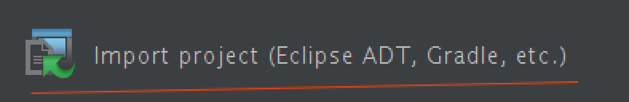

Try Android Studio and Gradle
更新日期:
系统环境：Ubuntu 14.04
Android Studio
- 安装。官网下载Android Studio（需翻墙），详细教程请见此大牛博客，http://stormzhang.com/
- 导入之前的eclipse工程。下面有两种方法，第1种方法是谷歌推荐的，但我试过后报错，用第2种方法成功。
(1)安卓官网推荐先在eclipse里将工程export成grade格式，见此：http://tools.android.com/tech-docs/new-build-system/migrating-from-eclipse-projects 顺着此介绍，将工程export成gradle后，再将gradle工程导入Android Studio，发现由于export工程的gradle版本与Studio的gradle版本不同，所以还是导不成功，最后选用方法2。
(2)进行下面操作之前，先将工程还原成之前的eclipse工程。Android studio首页右侧有一栏：Import Project(Eclipse ADT, Gradle, etc).点击导入工程，耐心等待，Android Studio会把一切需要配置的配置好。导入完毕以后，可能有一些依赖库未添加进去，根据log提示，google一下，能很快解决。

Gradle
- 安装（linux环境） 上gradle官网http://gradle.org/gradle-download/ 选择一个版本下载。下载完毕后，解压缩。然后配置环境变量，下面是我的配置
1 2 3 | sudo vim /etc/profile export GRADLE_HOME=/home/michael/gradle export PATH=$PATH:$GRADLE_HOME/bin |
- 学习Gradle。根据自己的学习经历，我觉得分三步：熟悉groovy语法；熟悉Gradle；深入理解Android Studio Gradle plugin。并且在这三步的学习过程中，配合阅读build.gradle文件，理解文件中的代码。
1) 熟悉groovy语法。我是找了一篇博客熟悉的。http://blog.csdn.net/SpiderDog/article/category/2317065
2) 熟悉Gradle。请看这里http://dongchuan.gitbooks.io/gradle-user-guide-/content/index.html 了解以下概念：Project，Tasks，dependencies，plugin。
3) 深入理解 Android Studio Gradle plugin。看这里http://avatarqing.gitbooks.io/gradlepluginuserguidechineseverision/content/introduction/README.html 我是按照下面几步学习Gradle plugin的，（1）对照build.gradle文件，读懂每一行代码 （2）尝试修改BuildTypes：debug release （3）自定义tasks. 下面是一个自定义tasks，功能是调用java命令用系统签名对应用签名
1 2 3 | task sign(type: Exec, dependsOn: assembleRelease) { executable "sh" args "-c", "java -jar signapk.jar platform.x509.pem platform.pk8 app-release-unsigned.apk v${defaultConfig.versionName}_${releaseTime()}.apk" } |
为什么要学习使用Gradle？
- 我们处在一个开源的世界里，经常需要用到github上优秀的开源库，gradle给了我们极其方便使用这些库的方法，只需要一行依赖代码，就自动下载，并配置好。我觉得程序员都应该尝试用gradle构建项目，简介快速地使用开源库，提高开发效率。
- Gradle相对于ant，配置简洁，强大。并且Android Studio完美支持Gradle。
- 如果你知道一个开源库的名称但不知道其在gradle的compile名称，请上此网站查找，http://gradleplease.appspot.com/